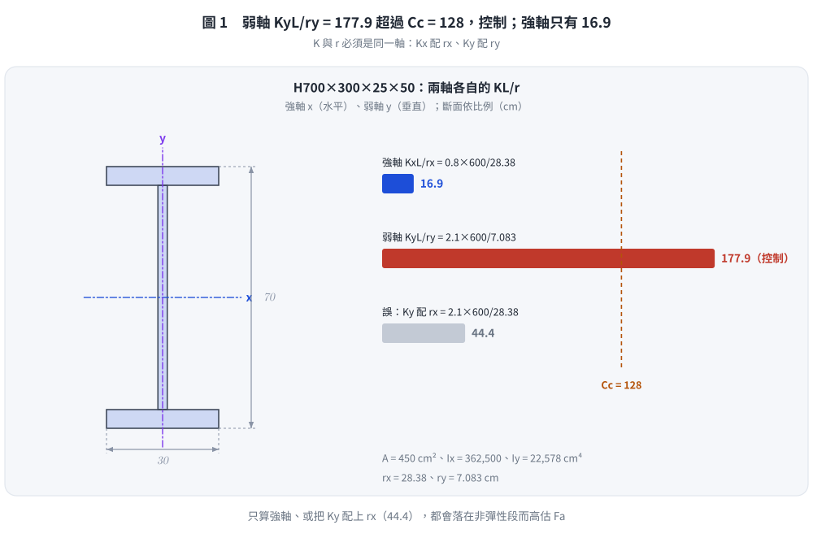
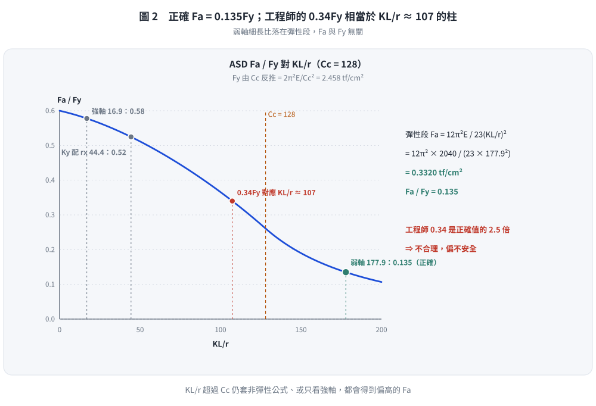

📄 題目正本：考卷原文・附圖・判讀清單（已確認）
SS-2017-3 題目正本
本檔只記錄考卷上寫了什麼、圖上畫了什麼，不含任何解法。解析見同資料夾
SS-2017-3.md。
判讀清單經使用者確認前，狀態為「待確認」；確認後本檔原則上不再修改（改動須回考卷原圖並記 log）。
| 項目 | 內容 |
|---|---|
| 考卷 | raw/exams/SS-2017_鋼結構設計.pdf 第 1 頁（全一頁），第三題 |
| 考年 | 民國 106 年（2017） |
| 配分 | 30 分 |
| 附圖 | 無 |
| 判讀狀態 | 已確認（2026-11-02 使用者確認，含「不確定」項之解讀；轉錄同日，PyMuPDF 110 dpi 全頁目視＋抽出文字核對，盲讀後才比對既有解析） |
1. 考卷原文（逐字）
三、某工程師依據容許應力設計法設計一長 6m 承受純軸壓之銲接組合 H 型鋼 H700×300×25×50，應力檢核時得容許應力（$F_a$）為 $0.34F_y$，請問計算所得之值容許應力（$F_a$）是否合理？請敘述原因。（30 分）（假設 $K_x = 0.8$、$K_y = 2.1$，$C_c = 128$）
（「計算所得之值容許應力」照考卷原文，疑為「計算所得之容許應力值」的筆誤，不影響題意。）
2. 考卷給的公式、附表與參數
- 題文：$L = 6$ m，$K_x = 0.8$，$K_y = 2.1$，$C_c = 128$，$F_a$（工程師所得）$= 0.34F_y$。
- 沒有給 $F_y$、$E$，也沒有給斷面性質（$A$、$I$、$r$ 都要由 H700×300×25×50 自行計算）。
- 本題沒有印任何公式。
- 卷首注意事項：㈠可用計算器、㈡不必抄題、㈢除專門名詞或數理公式外應使用本國文字作答。
3. 附圖
本題無附圖。
4. 判讀清單
「把握」標不確定者請優先確認；解讀類項目（題目用字的意思）另標「解讀」。
| # | 項目 | 判讀 | 圖上／題文依據 | 把握 |
|---|---|---|---|---|
| 1 | 斷面標示 | H700×300×25×50 ＝ $d \times b_f \times t_w \times t_f$（mm）：深 700、翼寬 300、腹板厚 25、翼板厚 50 | 國內 H 型鋼標示慣例 | 確定 |
| 2 | 柱長 | 兩軸無支長度都是 6 m（題文只給一個長度） | 題文 | 確定（解讀） |
| 3 | $K$ | 強軸 $K_x = 0.8$、弱軸 $K_y = 2.1$，兩軸分別算 $KL/r$ 取大者 | 題文 | 確定 |
| 4 | $F_y$ 未給 | 由 $C_c = \sqrt{2\pi^2E/F_y} = 128$ 反推（$E$ 取 2040 tf/cm² 時約 2.46 tf/cm²），或以 $F_a/F_y$ 的比值作答而不需 $F_y$ 數值 | 題文只給 $C_c$ | 不確定 → 使用者確認：由 $C_c$ 反推 $F_y = 2.458$ tf/cm²（$E$ 取 2040） |
| 5 | 斷面性質 | 未給，自行由板尺寸計算（翼板與腹板矩形組合，不計銲道） | 題文 | 確定（解讀） |
| 6 | 「是否合理」 | 依 ASD 公式以控制軸 $KL/r$ 重算 $F_a/F_y$，與 0.34 比較並說明差異原因 | 題文 | 確定（解讀） |
| 7 | 局部挫屈 | 是否要檢核翼板／腹板寬厚比（題目未提） | 題文未提 | 不確定 → 使用者確認：不列為必答（本解未檢核） |
轉錄：2026-11-02（SS-U1-1 題目正本推廣・批 3）｜確認：2026-11-02 使用者確認
考題編號：SS-2017-3
主分類： SS-U1-1 拉力及壓力桿件
副分類： 無
設計法： ASD
標籤： 壓力桿件 容許應力法 柱強度 細長比 彈性挫屈 非彈性挫屈 強弱軸 有效長度 ASD公式 錯誤診斷
1. 題目（考卷原文見題目正本）
考卷原文、公式／附表、附圖與判讀清單（已確認）見
SS-2017-3-problem.md。本節只列解題時最容易讀錯的地方與本解使用的記號；題意以題目正本為準。
常見誤讀
| 項目 | 正確判讀 | 常見誤讀 |
|---|---|---|
| 斷面性質 | 題未給，由 H700×300×25×50 板尺寸自算 | 套型鋼表或只算一軸 |
| 控制軸 | 兩軸長度同為 600 cm，弱軸 $K_yL/r_y \approx 178 > C_c$ 控制 | 只算強軸（$K_xL/r_x = 16.9$） |
| $F_y$ | 題未給，由 $C_c = 128$ 反推 2.458 tf/cm²（$E$ 取 2040） | 另設 $F_y$ 而與 $C_c$ 矛盾 |
| 公式區間 | $KL/r > C_c$ 用彈性式 $F_a = 12\pi^2E/[23(KL/r)^2]$ | 續用非彈性式 |
本解記號： $L = 600$ cm，$K_x = 0.8$，$K_y = 2.1$，$C_c = 128$；$E = 2040$ tf/cm²（題未給，本解假設）。
2. 考題核心精神與出題者意圖 (Core Concepts & Examiner's Intent)
核心觀念：弱軸控制 + 彈性挫屈才是正確答案
此題設計了一個「陷阱」：H700×300 型鋼的強弱軸半徑比極大（$r_x/r_y \approx 4$），且弱軸有效長度因子 $K_y = 2.1$ 遠大於 $K_x = 0.8$，導致弱軸細長比遠超 $C_c$（彈性範圍）。工程師若只用強軸或忽略弱軸，會得到錯誤（偏高）的 $F_a$。
出題者測驗重點：
- 必須計算兩個方向的細長比，取較大值為控制值
- $KL/r > C_c$ 時必須用彈性 Euler 公式（$F_a = 12\pi^2E/23(KL/r)^2$），而非非彈性公式
- $F_a = 0.34F_y$ 太高，正確值約 $0.135F_y$
3. 解題戰略地圖與陷阱分析 (Strategic Roadmap & Trap Analysis)
步驟規劃：
1. 計算斷面幾何性質：$A$、$I_x$、$I_y$、$r_x$、$r_y$
2. 分別計算強弱軸之 $KL/r$
3. 與 $C_c = 128$ 比較，判斷屬彈性或非彈性挫屈
4. 代入正確公式計算 $F_a$
5. 與 $0.34F_y$ 比較，下結論
關鍵陷阱：
⚠️ 陷阱1：只算強軸（最常見錯誤）
$K_xL/r_x = 0.8 \times 600 / 28.4 = 16.9$（遠小於 $C_c = 128$），若只算強軸，$F_a \approx 0.58F_y$（更高，更危險）。⚠️ 陷阱2：$KL/r > C_c$ 卻用非彈性公式
$K_yL/r_y = 178 > C_c = 128$，必須改用彈性 Euler 公式，若誤用非彈性公式，計算值會偏高。⚠️ 陷阱3：$C_c$ 的意義
$C_c = \sqrt{2\pi^2 E/F_y}$ 是彈性與非彈性挫屈的分界細長比，$KL/r > C_c$ → 彈性範圍 → 必須用 Euler 公式。
3.5 變數層次分析（Variable Hierarchy Analysis）
複習提示：解題後，在每個卡住的知識點「卡關?」欄標記
⚠；第二次複習時只看有⚠的項目。
最終目標： 計算 H700×300×25×50 強弱軸細長比 → 判斷彈性/非彈性挫屈 → 用正確 ASD 公式求 $F_a$ → 證明工程師的 $0.34F_y$ 不合理
主要公式（$\boxed{\phantom{x}}$ = 未知，待推導）
$$\boxed{r_y} = \sqrt{\frac{I_y}{A}},\quad \boxed{\frac{K_yL}{r_y}} = \frac{2.1 \times 600}{\boxed{r_y}} = 177.9 > C_c = 128$$
$$\boxed{F_a} = \frac{12\pi^2 E}{23(KL/r)^2} = 0.135 F_y \neq 0.34F_y \quad \text{（工程師錯誤）}$$
L1：題目直接給定
| 符號 | 數值 | 說明 |
|---|---|---|
| 斷面 | H700×300×25×50 | $d \times b_f \times t_w \times t_f$（mm） |
| 柱長 | $L = 6$ m $= 600$ cm | |
| $K_x$ | 0.8 | 強軸有效長度係數 |
| $K_y$ | 2.1 | 弱軸有效長度係數 |
| $C_c$ | 128 | 彈性/非彈性挫屈分界細長比（已知） |
| $E$ | 2040 tf/cm² | 彈性模數 |
| 工程師答案 | $F_a = 0.34F_y$ | 需判斷是否合理 |
L2：需知識點推導
Step 1：計算斷面幾何性質
| 符號 | 公式 / 來源 | 卡關? |
|---|---|---|
| $A$ | $2(b_f t_f) + h_w t_w = 2(300\times50) + 600\times25 = 45{,}000$ mm² | |
| $I_y$ | $2(t_f b_f^3/12) + h_w t_w^3/12 = 225{,}781{,}250$ mm⁴ | |
| $r_y$ | $\sqrt{I_y/A} = 70.83$ mm $= 7.083$ cm | |
| $I_x$ | $2[b_f t_f(d/2 - t_f/2)^2 + b_f t_f^3/12] + t_w h_w^3/12$ | |
| $r_x$ | $\sqrt{I_x/A} = 283.8$ mm $= 28.38$ cm |
Step 2：計算兩方向有效細長比
| 符號 | 公式 / 來源 | 卡關? |
|---|---|---|
| $K_xL/r_x$ | $0.8 \times 600 / 28.38 = 16.9$（強軸，遠小於 $C_c$） | |
| $K_yL/r_y$ | $2.1 \times 600 / 7.083 = 177.9$（弱軸，控制） | |
| 控制細長比 | $\max = 177.9$（弱軸）> $C_c = 128$ → 彈性挫屈 |
Step 3：計算正確 $F_a$
| 符號 | 公式 / 來源 | 卡關? |
|---|---|---|
| 適用公式判斷 | $KL/r > C_c$ → 彈性 Euler 範圍 | |
| $F_a$（彈性） | $12\pi^2 E / [23(KL/r)^2] = 0.3313$ tf/cm² | |
| $F_y$（反推） | $C_c = \sqrt{2\pi^2E/F_y} = 128 \Rightarrow F_y = 2.458$ tf/cm² | |
| $F_a/F_y$ | $0.3313/2.458 = 0.135$（正確值） |
Step 4：比較工程師答案
| 符號 | 公式 / 來源 | 卡關? |
|---|---|---|
| 工程師錯誤 | 可能只算強軸（$KL/r_x = 16.9$），忽略弱軸控制 | |
| 差異 | $0.34F_y / 0.135F_y \approx 2.5$ 倍，高估承載力 | |
| 結論 | $0.34F_y$ 不合理（偏高，偏不安全） |
L3：深層知識（不懂就卡住）
| 知識點 | 說明 | 卡關? |
|---|---|---|
| ASD 柱設計兩段公式 | $KL/r \leq C_c$：非彈性（拋物線）；$KL/r > C_c$：彈性 Euler | |
| $C_c$ 的物理意義 | $C_c = \sqrt{2\pi^2E/F_y}$，彈性/非彈性挫屈分界；不是安全係數 | |
| 強弱軸必須都算 | H 型鋼 $r_x/r_y \approx 4$，弱軸有效細長比可能是強軸的 10 倍 | |
| $K$ 值的力學意義 | 有效長度係數反映端部束制條件；$K_y = 2.1$ 代表弱軸接近自由端情況 | |
| 弱軸控制 vs 強軸控制 | 寬翼板淺梁（寬/深比大）強軸控制；窄翼板深梁（寬/深比小）弱軸控制 |
4. 步驟化詳細計算過程 (Step-by-Step Detailed Calculation)
Step 1：計算斷面幾何性質
斷面尺寸（單位 mm）：
- 全深 $d = 700$，翼板寬 $b_f = 300$，腹板厚 $t_w = 25$，翼板厚 $t_f = 50$
- 腹板淨高 $h_w = 700 - 2 \times 50 = 600$ mm
截面積：
$$A = 2 \times b_f t_f + h_w t_w = 2(300 \times 50) + 600 \times 25 = 30{,}000 + 15{,}000 = 45{,}000 \text{ mm}^2 = 450 \text{ cm}^2$$
強軸慣性矩 $I_x$（繞水平中性軸）：
$$I_x = 2\left[\frac{b_f t_f^3}{12} + b_f t_f \left(\frac{d - t_f}{2}\right)^2\right] + \frac{t_w h_w^3}{12}$$
$$= 2\left[\frac{300 \times 50^3}{12} + 300 \times 50 \times 325^2\right] + \frac{25 \times 600^3}{12}$$
$$= 2\left[3{,}125{,}000 + 1{,}584{,}375{,}000\right] + 450{,}000{,}000$$
$$= 3{,}175{,}000{,}000 + 450{,}000{,}000 = 3{,}625{,}000{,}000 \text{ mm}^4$$
強軸回轉半徑 $r_x$：
$$r_x = \sqrt{\frac{I_x}{A}} = \sqrt{\frac{3{,}625{,}000{,}000}{45{,}000}} = \sqrt{80{,}556} = 283.8 \text{ mm} = 28.38 \text{ cm}$$
弱軸慣性矩 $I_y$（繞垂直中性軸）：
$$I_y = 2 \times \frac{t_f b_f^3}{12} + \frac{h_w t_w^3}{12}$$
$$= 2 \times \frac{50 \times 300^3}{12} + \frac{600 \times 25^3}{12}$$
$$= 225{,}000{,}000 + 781{,}250 = 225{,}781{,}250 \text{ mm}^4$$
弱軸回轉半徑 $r_y$：
$$r_y = \sqrt{\frac{I_y}{A}} = \sqrt{\frac{225{,}781{,}250}{45{,}000}} = \sqrt{5{,}017} = 70.83 \text{ mm} = 7.083 \text{ cm}$$
Step 2：計算兩方向有效細長比
$$\frac{K_x L}{r_x} = \frac{0.8 \times 600}{28.38} = \frac{480}{28.38} = \mathbf{16.9}$$
$$\frac{K_y L}{r_y} = \frac{2.1 \times 600}{7.083} = \frac{1{,}260}{7.083} = \mathbf{177.9}$$
控制細長比：
$$\left(\frac{KL}{r}\right)_{\max} = 177.9 \quad \text{（弱軸控制）}$$

圖 1 弱軸 $K_yL/r_y = 177.9$ 超過 $C_c = 128$，控制；強軸只有 16.9。這張圖攔的是只算強軸、把 $K_y$ 配上 $r_x$（得 44.4），或算 $I_x$ 漏了翼板的平行軸項。
Step 3：判斷挫屈類型（與 $C_c$ 比較）
$$C_c = 128 \quad \Rightarrow \quad \left(\frac{KL}{r}\right)_{\max} = 177.9 > C_c = 128$$
$$\boxed{\text{弱軸細長比超過 } C_c \Rightarrow \text{彈性挫屈（Euler 範圍）}}$$
Step 4：計算正確容許應力 $F_a$
由 $C_c$ 反算 $F_y$（用於表達 $F_a/F_y$）：
$$C_c = \sqrt{\frac{2\pi^2 E}{F_y}} = 128 \quad \Rightarrow \quad F_y = \frac{2\pi^2 \times 2040}{128^2} = \frac{40{,}277}{16{,}384} = 2.458 \text{ tf/cm}^2$$
彈性挫屈容許應力公式（$KL/r > C_c$）：
$$F_a = \frac{12\pi^2 E}{23(KL/r)^2}$$
代入 $KL/r = 177.9$：
$$F_a = \frac{12 \times \pi^2 \times 2040}{23 \times 177.9^2} = \frac{12 \times 9.870 \times 2040}{23 \times 31{,}649} = \frac{241{,}589}{728{,}927} = \mathbf{0.3313 \text{ tf/cm}^2}$$
換算為 $F_y$ 的倍數：
$$\frac{F_a}{F_y} = \frac{0.3313}{2.458} = \mathbf{0.135}$$
$$\boxed{F_a = 0.135 F_y}$$

圖 2 正確 $F_a = 0.135F_y$；工程師的 $0.34F_y$ 相當於 $KL/r \approx 107$ 的柱，高估約 2.5 倍。這張圖攔的是 $KL/r$ 超過 $C_c$ 仍套非彈性式，或把 0.34 判為合理。（彈性段 $F_a$ 精確值 0.3320 tf/cm²，解析寫 0.3313，比值 0.135 不變。）
Step 5：與工程師的 $F_a = 0.34F_y$ 比較
| 項目 | 工程師值 | 正確值 |
|---|---|---|
| 控制細長比 | （可能只算強軸 $KL/r = 16.9$） | 弱軸 $KL/r = 177.9$ |
| 挫屈類型 | 非彈性（誤用） | 彈性 Euler（正確） |
| $F_a$ | $0.34 F_y$（偏高） | $0.135 F_y$（正確） |
| 安全性 | ❌ 不合理（偏保守？或偏不安全？） | ✓ |
結論：工程師的 $F_a = 0.34F_y$ 不合理（偏高，偏不安全）。
正確值 $F_a = 0.135F_y$，僅為工程師所得值的 40%，說明工程師顯著高估了柱的承載能力。
工程師最可能的錯誤：
1. 只計算強軸有效細長比 $K_xL/r_x = 16.9$，完全忽略弱軸 $K_yL/r_y = 178$
2. 或雖用 $K_y = 2.1$ 但誤用 $r_x$（強軸半徑）計算弱軸細長比，得到 $K_yL/r_x = 44.4$，此值雖也小於 $C_c$ 但仍偏高（$F_a \approx 0.52F_y$）
$$\boxed{\text{答：} F_a = 0.34F_y \text{ 不合理，正確值為 } F_a \approx 0.135F_y；\text{差距達 2.5 倍，屬重大錯誤}}$$
5. 關鍵爭議點與進階探討 (Critical Issues & Advanced Discussion)
強弱軸細長比的懸殊差異
此斷面的強弱軸回轉半徑比：
$$\frac{r_x}{r_y} = \frac{28.38}{7.083} \approx 4.0$$
再加上有效長度因子差異（$K_y/K_x = 2.1/0.8 = 2.625$），弱軸有效細長比倍數：
$$\frac{K_yL/r_y}{K_xL/r_x} = \frac{178}{16.9} \approx 10.5 \text{ 倍}$$
工程意義： H700×300 的翼板寬度（300mm）遠小於深度（700mm），弱軸極弱，在兩端鉸支且有 $K_y = 2.1$ 放大的情況下，弱軸控制是必然的。
銲接組合斷面（Welded Built-up Section）的特殊考量
題目說明為「銲接組合」斷面，相較熱軋斷面：
- 殘留應力較大（翼板、腹板交界銲縫區）
- ASD 規範要求使用相同公式，但部分規範版本對銲接斷面使用不同柱曲線
在 LRFD 規範中，銲接組合斷面的柱曲線與熱軋相同（AISC），故本題 ASD 計算不需特別調整。
考場安全答法
- 計算 $r_x$、$r_y$（清楚列出）
- 列出 $K_xL/r_x = 16.9$ 和 $K_yL/r_y = 178$（兩者都算）
- 說明 $178 > C_c = 128$，適用彈性公式
- 計算 $F_a = 0.135F_y$
- 結論：$0.34F_y$ 不合理，高估了 2.5 倍
修正日期：2026-11-02（§1 全文重述改為指向題目正本 SS-2017-3-problem.md（已確認）＋常見誤讀＋本解記號；解題內容與答案不變）
圖解補繪：2026-11-03（向量圖 2 張，腳本 gen_SS-2017-3.py，改輸入可原地重跑；SVG 供 wiki／PDF，2× PNG 供 pptx／影片）